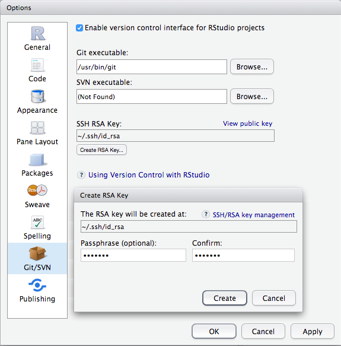
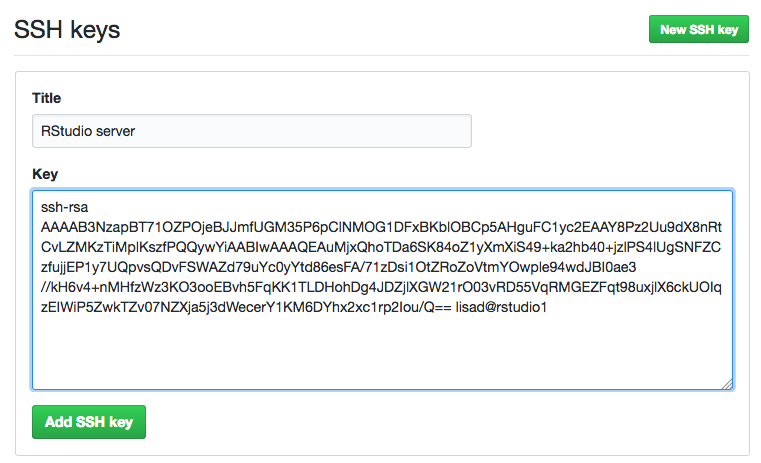

B Git and GitHub
There are many reasons to use version control. Git is one option and it is well-integrated into RStudio. GitHub is a free service to store your version controlled projects in the cloud and (optionally) share them with others.
B.1 Get a GitHub account
Go to GitHub and create a new account.
- Make sure your username is professional
- Use an email address that you won't lose access to (e.g., gmail)
B.2 Set up RStudio
If you are a UofG INP staff/student, you can access the Glasgow Psychology RStudio site and skip to Set your GitHub info.
If you are working from your own computer, follow the next 2 sub-steps:
B.2.1 Install git
You can check if git is already installed on your computer by going to Shell... under the Tools menu (or just open a terminal window) and typing which git. If you get an answer like /usr/local/bin/git then git is already installed. If not, install git and then use which git to check where it is installed.
B.2.2 Enable version control in RStudio
Go to Global Options... from the Tools menu and set the location of your git executable to the location from the previous step.

Figure B.1: Set the location of git
B.3 Set your GitHub info
Run usethis::edit_git_config() in the console pane; it will open a file called .gitconfig. Replace GITHUB_EMAIL with the email address you used for github and GITHUB_USERNAME with your github username.
[user]
email = GITHUB_EMAIL
name = GITHUB_USERNAME
You can skip the rest of the steps if you are using your own computer because you can use https to access github. If you are using an RStudio server or just want to use SSH, follow the steps below.
B.4 Create an SSH Key on RStudio
- Go to
Global Options...from theToolsmenu - Click
Create RSA Key...and enter a passphraseFigure B.2: Global options
- Click on
View public keyand copy the contents of the box
B.5 Create an SSH Key on GitHub
- Go to GitHub > Settings > SSH and GPG keys
- Click
New SSH Key - Put
RStudio serveras the title (orMy Computer Nameif on your own computer) - Paste your public key into the
Keybox - Click
Add SSH keyFigure B.3: Add SSH key